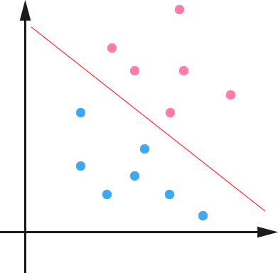

向量机
Table of Contents
1 概述
支持向量机 (support vector machines, SVM) 是一种二类分类模型，基本模型是定义在特征空间上的间隔最大的线性分类器。支持向量机还包括核技巧，使其称为实质上的非线性分类器。支持向量机的学习策略就是间隔最大化，可形式化为一个求解凸二次规划 (convex quadratic programming) 的问题，也等价于正则化的合页损失函数的最小化问题。支持向量机的学习算法是求解凸二次规划的最优化算法。
支持向量机学习方法包括构建由简至繁的模型：
- 线性可分支持向量机 (linear support vector machine in linearly separable case)：训练数据可分时，通过硬间隔最大化 (hard margin maximization)，学习一个线性的分类器。
- 线性支持向量机 (linear support vector machine)：训练数据近似线性可分时，通过软间隔最大化 (soft margin maximization)，也学习一个线性分类器
- 非线性支持向量机 (non-linear support vector machine)：当训练数据不可分时，通过使用核技巧 (kernel trick) 以及软间隔最大化，学习非线性支持向量机
当输入空间为欧式空间或离散集合、特征空间为希尔伯特空间时，核函数 (kernel function) 表示将输入从输入空间映射到特征空间，得到的特征向量之间的内积。通过使用核函数，可以学习非线性支持向量机，等价于隐式地在高维的特征空间中学习线性支持向量机。这样的方法被称为核技巧。核方法 (kernel method) 是比支持向量机更为一般的机器学习方法。
2 线性可分支持向量机与硬间隔最大化
2.1 线性可分向量机
2.1.1 数据集
假设给定一个特征空间上的训练数据集
\begin{equation} T = \{(x_1,y_1), (x_2,y_2), \ldots, (x_N,y_N)\}, \end{equation}其中，
\begin{equation} x_i \in \mathcal{X} = {\bm R}^n, y_i \in \mathcal{Y} = \{+1, -1\}, i=1,2,\ldots,N, \end{equation}\(x_i\) 为第 \(i\) 个特征向量，也称为实例，\(y_i\) 为 \(x_i\) 的类标记，当 \(y_i = +1\) 时，称 \(x_i\) 为正例；当 \(y_i = -1\) 时，称 \(x_i\) 为负例。 \((x_i, y_i)\) 为样本点，再假设训练数据集是线性可分的。
2.1.2 目标
学习的目标是在特征空间中找到一个分离超平面，能将实例分到不同的类。分离超平面对应于方程 \(\omega \cdot x + b = 0\) ，它由法向量 \(\omega\) 与截距 \(b\) 决定的，可用 \((\omega, b)\) 表示。分离超平面将特征空间划分为两部分，一部分是正类，一部分是负类，法向量指向的一侧是正类，另一侧是负类。
2.1.3 说明
一般地，当训练数据集线性可分时，存在无穷个分离超平面可将两类数据正确分开，感知机利用误分类最小的策略，求得分离超平面，不过，此时的解有无穷多个。线性可分支持向量机利用间隔最大化求最优分离超平面，此时，解是唯一的。
2.1.4 定义
给定线性可分1训练数据集，通过间隔最大化或等价地求解相应的凸二次规划问题学习得到的分离超平面为：
\begin{equation} \omega^{\ast} \cdot x + b^{\ast} = 0 \end{equation}以及相应的分类决策函数：
\begin{equation} f(x) = sign(\omega^{\ast} \cdot x + b^{\ast}) \end{equation}称为线性可分支持向量机。
2.1.5 举例
如图 1 所示，红色点与蓝色点就是线性可分的，我们需要做的是找到一个最优化的分割方案。线性可分支持向量机就是去找到一种方案，使得分割线与两边的间隔最大。

Figure 1: 二类分类问题
2.2 函数间隔与几何间隔
2.2.1 说明
对于数据集 \(T = \{(x_1,y_1), (x_2,y_2), \ldots, (x_N,y_N)\}\) 上的数据点，它到分隔超平面的距离肯定是关于坐标 \((\vec{x}, \vec{y})\) 的一个函数，考虑到几何上点到面的距离向量必然与超平面的法向量平行，假设超平面的法向量为 \(\vec{\omega}\) ，同时，由于需要考虑平面两侧不同，点到面的距离我们可以人为设置正负，以便与分类标签 \(y_i = {+1, -1}\) 对应，于是，很自然地我们可以写出点到面的距离的函数如下：
\begin{equation} \bar{\gamma}_i = y_i(\omega \cdot x_i + b) \end{equation}其中， \(y_i\) 是数据点的 label，按数据点在分界面的哪一边来定， \(b\) 是截距。以上的方式有一个缺点，当我们对上式中 \(\omega\) 和 \(b\) 同时乘以一个因子时，由此确定的超平面是不变的，但是由上式定义出的函数间隔却变为原来的两倍。这意味着，仅靠上式来确定数据点到分离面的距离是不够的。为此，我们可以通过几何上点到面的距离计算公式，来确定数据点到分离面的距离，如图 2 所示的 \(\gamma_i\) ，几何上可以由下式给出：
\begin{equation} \gamma_i = y_i\left(\frac{\omega}{||\omega||} \cdot x_i + \frac{b}{||\omega||}\right) \end{equation}
Figure 2: 几何间隔示意图
然后，我们只需要找到 \(\gamma = \min \limits_{i=1,\ldots,N}\gamma_i\) 并使之取极大值，就可以确定我们需要的分隔超平面与数据点到分离面的几何距离了。
2.2.2 定义
- 函数间隔
对于给定的训练数据集 \(T\) 和 超平面 \((\omega, b)\) ，定义超平面 \((\omega, b)\) 关于样本点 \((x_i, y_i)\) 的函数间隔为：
\begin{equation} \bar{\gamma_i} = y_i(\omega \cdot x_i + b) \end{equation}定义超平面 \((\omega, b)\) 关于训练数据集 \(T\) 的函数间隔为超平面 \((\omega,b)\) 关于 \(T\) 中所有样本点 \((x_i, y_i)\) 的函数间隔最小值，即：
\begin{equation} \bar{\gamma} = \min_{i=1,\ldots,N}\bar{\gamma_i} \end{equation}- 几何间隔
对于给定的训练数据集 \(T\) 和 超平面 \((\omega, b)\) ，定义超平面 \((\omega, b)\) 关于样本点 \((x_i, y_i)\) 的几何间隔为：
\begin{equation} \gamma_i = y_i\left(\frac{\omega}{||\omega||} \cdot x_i + \frac{b}{||\omega||}\right) \end{equation}定义超平面 \((\omega, b)\) 关于训练数据集 \(T\) 的几何间隔为超平面 \((\omega,b)\) 关于 \(T\) 中所有样本点 \((x_i, y_i)\) 的几何间隔最小值，即：
\begin{equation} \gamma = \min_{i=1,\ldots,N}\gamma_i \end{equation}2.2.3 关系
由定义可知，函数间隔与几何间隔关系如下：
\begin{eqnarray} \gamma_i &=& \frac{\bar{\gamma_i}}{||\omega||}\\ \gamma &=& \frac{\bar{\gamma}}{||\omega||} \end{eqnarray}2.3 间隔最大化
对于线性可分训练数据集，分离超平面有无数个，我们的想法是求出分离超平面关于训练数据集的几何间隔，使其取最大值，以此来得到唯一的分离超平面。这里的间隔最大化又被称为硬间隔最大化。对此处理方法的直观解释：对训练集找到几何间隔最大的超平面意味着以充分大的确信度对训练数据进行分类。也就是说，不仅将正负实例点分开，而且对最难分的实例点 (离分离超平面最近的点) 也有足够大的确定度将它们分开，这样的超平面应该对未知的新实例有很好的分类预测能力。
2.3.1 最大间隔分离超平面
对于我们的想法，用数学语言表达就是：
\begin{eqnarray} \max_{\omega, b} && \gamma\\ s.t. && y_i\left( \frac{\omega}{||\omega||} \cdot x_i + \frac{b}{||\omega||} \right) \geq \gamma, i = 1,2,\ldots,N \end{eqnarray}考虑到函数间隔与几何间隔关系，上式又可以写成，
\begin{eqnarray} \max_{\omega, b} && \bar{\gamma}\\ s.t. && y_i (\omega \cdot x_i + b) \geq \bar{\gamma}, i = 1,2,\ldots,N \end{eqnarray}可以看出，函数间隔的取值 \(\bar{\gamma}\) 并不影响最优化问题的解2。因此，为了方便计算，我们可以取 \(\bar{\gamma} = 1\) ，并将其带入上式，同时，考虑到最大化 \(\frac{1}{||\omega||}\) 与最小化 \(\frac{1}{2}||\omega||^2\) 是等价的3，于是，上述最优化问题转换为下面的线性可分向量机学习的最优化问题：
\begin{eqnarray} \min_{\omega, b} && \frac{1}{2}||\omega||^2\\ s.t. && y_i (\omega \cdot x_i + b) -1 \geq 0, i = 1,2,\ldots,N \end{eqnarray}上式是一个凸二次规划 (convex quadratic programming) 问题。如果求出了约束最优化问题 1 的解 \(\omega^{\ast}, b^{\ast}\) ，就可以得到最大间隔分离超平面 \(\omega^{\ast}\cdot{}x+b^{\ast}\) 及分类决策函数 \(f(x) = sign(\omega^{\ast}\cdot{}x+b^{\ast}\) ，即线性可分支持向量机模型。
综上，我们可以得到下面的线性可分支持向量机的学习算法–最大间隔法 (maximum margin method):
算法 1：线性可分支持向量机学习算法–最大间隔法
输入：线性可分训练数据集 \(T=\{(x_1, y_1), (x_2, y_2), \ldots, (x_N, y_N)\}\) ，其中， \(x_i \in \mathcal{X} = R^n, y_i \in \mathcal{Y}={+1, -1}, i=1,2,\ldots,N\) ;
输出：最大间隔分离超平面和分类决策函数。
构造并求解约束最优化问题：
\begin{eqnarray} \min_{\omega, b} && \frac{1}{2}||\omega||^2\\\nonumber s.t. && y_i (\omega \cdot x_i + b) -1 \geq 0, i = 1,2,\ldots,N \end{eqnarray}求得最优解 \(\omega^{\ast}, b^{\ast}\)
由此得到分离超平面
\begin{equation} \omega^{\ast} \cdot x + b^{\ast} = 0 \end{equation}和分类决策函数
\begin{equation} f(x) = sign(\omega^{\ast}\cdot{}x+b^{\ast}) \end{equation}- 可以证明，最大间隔分离超平面存在且唯一
2.3.2 支持向量与间隔边界
支持向量
在线性可分情况下，训练数据集的样本点中与分离超平面距离最近的样本点的实例称为支持向量。即使得最优化条件中不等式等号成立的点，
\begin{equation} y_i(\omega \cdot x_i + b) - 1 = 0 \end{equation}对于 \(y_i = +1\) 的正例点，支持向量在超平面 \(H1: \omega \cdot x + b = 1\) ；对于 \(y_i = -1\) 的负例点，支持向量在超平面 \(H2: \omega \cdot x + b = -1\) 。
间隔边界
如下图所示，粉色线为 \(H1\) ，蓝色线为 \(H2\) ，两者之间的距离，称为间隔。分离超平面位于两者中央与两者平行。间隔依赖于分离超平面的法向量 \(\omega\) ，等于 \(\frac{2}{||\omega||}\) ， \(H1,H2\) 称为间隔边界。
说明
在决定分离超平面时，只有支持向量起作用，其他实例点并不起作用，移动或添加其他实例点并不影响我们的求解。由于支持向量再确定分离超平面中起着决定性作用，所以将这类分类模型称为支持向量机。支持向量的个数很少，所以支持向量机由很少的 “重要的” 训练样本决定。
举例
已知训练数据集，其正例点为 \(x_1=(3,3)^{T}\) ， \(x_2=(4,3)^{T}\) ，负例点为 \(x_3=(1,1)^{T}\) ，试求最大间隔分离超平面。
解：
构造数据集约束最优化问题：
\begin{eqnarray} \min_{\omega, b}: &&\frac{1}{2}(\omega^{2}_{1}+\omega^{2}_{2})\\\nonumber s.t. & & 3\omega_1+3\omega_2+b \geq 1\\\nonumber & & 4\omega_1+3\omega_2+b \geq 1\\\nonumber & & -\omega_1-\omega_2-b \geq 1 \end{eqnarray}解最优化问题，
实际上，如果在坐标轴上将三个点画出，可以很容易找到最优解为穿过点 \((0, 4)\) 和 \((4, 0)\) 的直线，利用两个支持向量所在超平面对应的等式 \(3\omega_1+3\omega_2+b=1\) 和 \(-\omega_1-\omega_2-b=1\) 可以求出 \(b=-2\) ，直线的已知，可以很容易看出 \(\omega_1 = \omega_2 = \frac{1}{2}\) 。于是，我们最终得到最大间隔分离超平面为：
\begin{equation} \frac{1}{2}x^{(1)}+\frac{1}{2}x^{(2)}-2 = 0 \end{equation}其中， \(x_1 = (3,3)^T\) 与 \(x_2 = (1,1)^T\) 为支持向量。
2.3.3 学习的对偶算法
- 拉格朗日对偶性
原始问题
假设 \(f(x)\) ， \(c_i(x)\) ， \(h_j(x)\) 是定义在 \({\rm R}^n\) 上的连续可微函数，考虑约束最优化问题
\begin{eqnarray} \min_{x\in{}{\rm R}^n} & &f(x)\\\nonumber s.t. & &c_i(x) \leq 0, i= 1,2,\ldots, k\\\nonumber & &h_j(x) = 0, j = 1,2,\ldots, l \end{eqnarray}称此问题为原始最优化问题或者原始问题。
引入广义拉格朗日函数 (generalized Lagrange function)
\begin{equation} L(x, \alpha, \beta) = f(x) + \sum^{k}_{i=1}\alpha_ic_i(x) + \sum^{l}_{j=1}\beta_jh_j(x) \end{equation}这里， \(x=(x^{(1)}, x^{(2)}, \ldots, x^{(n)})^T\in{}{\rm R}^n\) ， \(\alpha_i, \beta_j\) 是拉格朗日乘子， \(\alpha_i\geq{}0\) 。考虑 \(x\) 的函数：
\begin{equation} \theta_P(x) = \max_{\alpha,\beta:\alpha_i\geq{}0} L(x,\alpha,\beta) \end{equation}这里下标 \(P\) 表示原始问题。对于某个给定的 \(x\) ，如果 \(x\) 违反原始问题的约束条件，即存在某个 \(i\) 使得 \(c_i(\omega) > 0\) 或存在某个 \(j\) 使得 \(h_j(\omega) \neq 0\) ，那么就有：
\begin{equation} \theta_P(x) = \max_{\alpha,\beta:\alpha_i\geq{}0}\left[ f(x) + \sum^{k}_{i=1}\alpha_ic_i(x) + \sum^{l}_{j=1}\beta_jh_j(x)\right] = +\infty \end{equation}因为若某个 \(i\) 使约束 \(c_i(x) > 0\) ，则可令 \(\alpha_i\sim{}+\infty\) ；若某个 \(j\) 使得 \(h_j(x)\neq{}0\) ，总可令 \(\beta_jh_j(x) \sim +infty\) ，而将其他 \(\alpha_i,\beta_j\) 取为 0。因此，如果 \(x\) 满足约束条件，那么就有：
\begin{equation} \theta_p(x) = \begin{cases} f(x) & x \text{满足原始问题约束}\\ +\infty & \text{其他} \end{cases} \end{equation}于是，我们如果考虑极小化问题
\begin{equation} \min_{x}\theta_P(x) = \min_{x} \max_{\alpha,\beta:\alpha\geq{}0}L(x, \alpha, \beta) \end{equation}它是与原始问题等价的问题，这样，我们就可以通过求解上式广义拉格朗日的极小极大问题来求解原始约束最优化问题的解。
对偶问题
定义 \(\theta_D(x) = \min_{x} L(x, \alpha, \beta)\) ，然后考虑极大化 \(\theta_D(x)\) ，即：
\begin{equation} \max_{\alpha, \beta: \alpha_i\geq{}0}\theta_D(\alpha, \beta) = \max_{\alpha, \beta: \alpha_i\geq{}0} \min_{x} L(x, \alpha, \beta) \end{equation}问题 \(\max_{\alpha, \beta: \alpha_i\geq{}0} \min_{x} L(x, \alpha, \beta)\) 称为广义拉格朗日函数的极大极小问题。
可以将广义拉格朗日函数的极大极小问题表示为约束最优化问题：
\begin{eqnarray} \max_{\alpha,\beta} \theta_D(\alpha, \beta) &=& \max_{\alpha,\beta} \min_{x}L(x,\alpha,\beta)\\ \nonumber s.t. && \alpha_i \geq 0, i = 1,2,\ldots,k \end{eqnarray}称为原始问题的对偶问题，定义对偶问题的最优值
\begin{equation} d^{\ast} = \max_{\alpha,\beta:\alpha_i\geq{}0}\theta_D(\alpha,\beta) \end{equation}称为对偶问题的值。
原始问题与对偶问题的关系
定理 1：若原始问题和对偶问题都有最优值，则
\begin{equation} d^{\ast} = \max_{\alpha,\beta:\alpha_i\geq{}0}\min_{x}L(x,\alpha,\beta) \leq \min_{x}\max_{\alpha,\beta:\alpha_i\geq{}0}L(x,\alpha,\beta) = p^{\ast} \end{equation}推论 1：设 \(x^{\ast}\) 和 \(\alpha^{\ast}, \beta^{\ast}\) 分别是原始问题和对偶问题的可行解，而且有 \(d^{\ast} = p^{\ast}\) ，则 \(x^{\ast}\) 和 \(\alpha^{\ast}, \beta^{\ast}\) 分别是原始问题和对偶问题的最优解。
定理 2：考虑原始问题与对偶问题，假设 \(f(x)\) 和 \(c_i(x)\) 是凸函数4， \(h_j(x)\) 是仿射函数5；并且假设不等式约束 \(c_i(x)\) 是严格可行的，即存在 \(x\) ，对所有 \(i\) 有 \(c_i(x) < 0\) ，则存在 \(x^{\ast}, \alpha^{\ast}, \beta^{\ast}\) ，使得 \(x^{\ast}\) 是原始问题的解， \(\alpha^{\ast}, \beta^{\ast}\) 是对偶问题的解，而且
\begin{equation} p^{\ast} = d^{\ast} = L(x^{\ast}, \alpha^{\ast}, \beta^{\ast}) \end{equation}定理 3：对原始问题和对偶问题，假设 \(f(x)\) 和 \(c_i(x)\) 是凸函数， \(h_j(x)\) 是仿射函数，并且不等式约束 \(c_i(x)\) 是严格可行的，则 \(x^{\ast}, \alpha^{\ast}, \beta^{\ast}\) 分别是原始问题和对偶问题的解的充分必要条件是 \(x^{\ast}, \alpha^{\ast}, \beta^{\ast}\) 必须满足下面的 KKT 条件：
\begin{eqnarray} \nabla_{x}L(x^{\ast}, \alpha^{\ast}, \beta^{\ast}) & = & 0\\\nonumber \nabla_{\alpha}L(x^{\ast}, \alpha^{\ast}, \beta^{\ast}) & = & 0\\\nonumber \nabla_{\beta}L(x^{\ast}, \alpha^{\ast}, \beta^{\ast}) & = & 0\\\nonumber \alpha^{\ast}c_i(x^{\ast}) =0,&& i = 1,2,\ldots,k\\\nonumber c_i(x^{\ast}) \leq 0,&& i = 1,2,\ldots,k\\\nonumber \alpha_{i}^{\ast} \geq 0 ,&& i = 1,2,\ldots,k\\\nonumber h_{j}(x^{\ast}) = 0 ,&& i = 1,2,\ldots,l \end{eqnarray}
- 利用对偶问题求解原始问题的最优解
构建拉格朗日函数
对原始问题 (式 1) 中每个不等式约束引入拉格朗日乘子 (Lagrange multiplier) \(\alpha_i \geq 0, i=1,2,\ldots,N\) ，定义拉格朗日函数：
\begin{equation} L(\omega, b, a) = \frac{1}{2}||\omega||^2-\sum^{N}_{i=1}\alpha_iy_i(\omega\cdot{}x_i+b) + \sum^{N}_{i=1}\alpha_i \end{equation}其中， \(\alpha=(\alpha_1, \alpha_2, \ldots, \alpha_N)^T\) 为拉格朗日乘子向量。
原始问题的对偶问题由之前讨论可知，与原始问题等价的极小极大问题是：
\begin{equation} \min_{x,\omega} \max_{\alpha} \end{equation}
Footnotes:
线性可分的定义：给定一个数据集 \(T = \{(x_1,y_1), (x_2,y_2), \ldots, (x_N,y_N)\}\) ，其中， \(x_i \in \mathcal{X} = {\bm R}^n, y_i \in \mathcal{Y} = \{+1, -1\}, i=1,2,\ldots,N\) ，如果存在某个超平面 S： \(\omega \cdot x + b = 0\) 能够将数据集完全正确地划分到超平面的两侧，即对所有 \(y_i = +1\) 的实例 \(i\) ，有 \(\omega \cdot x + b > 0\) ，对所有 \(y_i = -1\) 的实例 \(i\) ，有 \(\omega \cdot x + b < 0\) ，则称数据集 T 是线性可分数据集 (linear separable data set)；否则，称数据集为线性不可分。
事实上，如果考虑到拉格朗日乘子法的时候，这一点可以更加明显地表现出来。
最大化 \(\frac{1}{|x|}\) 等价于最小化 \(|x|\) 等价于最小化 \(\frac{1}{2}|x|^2\) 。
简单从理解上讲， \(f^{\prime\prime}(x) > 0\) 对应凹函数， \(f^{\prime\prime}(x) < 0\) 对应凸函数。
简单而言，仿射函数是指一阶多项式组成的函数，譬如 \(y = ax+b\) 。